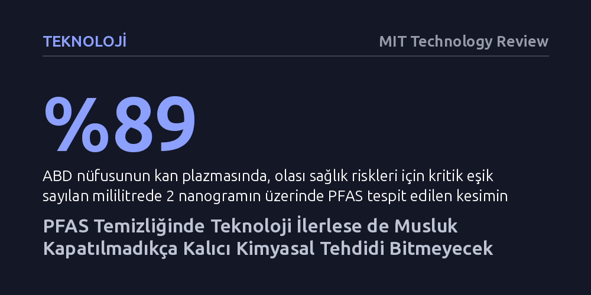

TEKNOLOJI · MIT Technology Review · 2026-10-22
Su kaynaklarındaki kalıcı PFAS kimyasallarını parçalayan yeni teknolojiler umut verse de üretim durdurulmadıkça kirlilik engellenemiyor. Yüzde 90'ı aşan imha başarılarına rağmen, 12 binden fazla kimyasal türüyle baş etmek için asıl çözüm yasal yasaklardan geçiyor.
İçme suyundaki kalıcı kimyasalları arıtma yöntemleri gelişse bile çevre ve sağlık felaketinin ancak üretim kaynağında durdurularak çözülebileceğini gösteriyor.

Teflon tavalardan yangın söndürme köpüklerine kadar onlarca yıldır endüstriyel ürünlerde kullanılan per- ve polifloroalkil maddeler (PFAS), modern hayatın en sinsi çevre krizlerinden birine dönüştü. Moleküler yapılarındaki karbon ve flor atomları arasındaki kimyasal bağ o kadar güçlüdür ki doğanın bu bağı doğal süreçlerle parçalaması neredeyse imkansızdır. Bu direnç nedeniyle 'sonsuz kimyasallar' olarak adlandırılan bileşikler yalnızca fabrikalardan çevreye saçılmakla kalmıyor; gündelik eşyalardan suya sızarak besin zincirine ve hatta Antarktika'daki karların içine kadar ulaşıyor.
Sorunun vahameti laboratuvar verileriyle de belgeleniyor. ABD'de yapılan kapsamlı bir araştırma, nüfusun yüzde 89'unun kan plazmasında sağlık açısından risk eşiği kabul edilen mililitrede 2 nanogramın üzerinde PFAS bulunduğunu ortaya koyuyor. Daha da kaygı verici olanı, toplumun yüzde 9'luk kesiminin çok daha tehlikeli bir sınır olan 20 nanogram düzeyini aşmış olması. Üreme sorunlarından gelişim bozukluklarına, bağışıklık zayıflığından kansere kadar uzanan tehlikeler bilinse de ortalıkta sürekli hareket eden bir hedef var: Endüstri 12 binden fazla farklı PFAS türü geliştirmiş durumda ve mevcut arıtma araştırmaları bunların sadece ufak bir kısmına odaklanabiliyor.
Toprağa bulaşmış PFAS'ı temizlemek henüz başlangıç aşamasında olsa da su şebekelerindeki kimyasal birikimini durdurmak için iki temel yol bulunuyor: bu maddeleri filtreleyip yakalamak ya da tamamen yok etmek. Bireysel kullanım düzeyinde, mutfak lavabolarına bağlanan ve suyu son derece sıkı zarlardan geçmeye zorlayan ters ozmoz filtrelerinin kirleticileri tutmada oldukça etkili olduğu biliniyor.
Büyük ölçekli belediye arıtma tesisleri için ise köpük fraksiyonasyonu gibi farklı yaklaşımlar deneniyor. Bu yöntemde suyun içinde küçük kabarcıklar oluşturuluyor ve PFAS molekülleri bu hava kabarcıklarına tutunarak yüzeye çıkarılıp toplanıyor. Benzer şekilde, yüklü metal tabakalar yardımıyla molekülleri elektrostatik olarak hapsetme çalışmaları da sürüyor. Ne var ki hapsederek filtrelemenin ciddi bir kusuru var: İşlemin sonunda elinizde yoğun miktarda PFAS içeren zehirli bir atık kalıyor. Eğer bu kimyasal yoğunluklu atık yüksek enerji ve maliyet harcanarak kalıcı biçimde yok edilmezse, dönüp dolaşıp yeniden ekosisteme karışma riski taşıyor.
Kimyasalları sadece bir yerden başka bir yere taşımak yerine tamamen yok etmeyi hedefleyen bilim insanları, doğrudan karbon-flor bağını hedef alıyor. Georgia Üniversitesi'nden toprak ve ürün bilimleri uzmanı Jack Huang, 'elektrokimyasal bozunma' adı verilen bir imha yöntemi üzerinde çalışıyor. Bu teknoloji, arıtma tanklarına yerleştirilen özel elektrotlar ve kontrollü elektrik akımı sayesinde PFAS moleküllerini bir arada tutan inatçı bağları kimyasal olarak parçalıyor.
Laboratuvar testlerinde PFAS kütlesinin yüzde 90'ından fazlasını başarıyla imha eden bu sistem, şimdiden mühendislik danışmanlık firması AECOM tarafından lisanslanarak pratik uygulamaya aktarıldı. Bu tür elektrokimyasal imha yöntemleri, arıtma tesislerinde hapsedilen konsantre atıkları tamamen zararsız bileşenlere dönüştürme potansiyeli sunduğu için döngüsel temizliğin en kritik halkasını oluşturuyor.
Teknolojik ilerlemeler kimyasalları sudan ayırma ve parçalamada önemli adımlar sağlasa da uzmanlar krizin sadece mühendislikle aşılamayacağını vurguluyor. Çünkü her gün binlerce yeni kimyasal üretilip tüketime sürülürken sadece arkada bıraktığı atığı temizlemeye çalışmak sürdürülebilir bir mücadele sunmuyor. Makalenin de özetlediği gibi, "musluğu kapatmadığımız sürece" geliştirilen bu filtreleme ve imha teknolojileri nihai bir zafer sağlayamayacak.
Çözümün anahtarı, alternatif malzemelerin kullanımını zorunlu kılan siyasi politikalarda yatıyor. Tarihte bunun başarılı örnekleri mevcut: ABD Çevre Koruma Ajansı'nın (EPA) yürüttüğü gönüllü azaltım programı sayesinde su itici PFOA salımı yüzde 95 oranında düşürülebilmişti. Günümüzde de Maine, Minnesota ve New Mexico gibi eyaletler tencere-tavalardan diş iplerine kadar birçok tüketici ürününde PFAS kullanımını yasaklayarak musluğu kaynağında kapatmanın tek gerçekçi yol olduğunu gösteriyor.